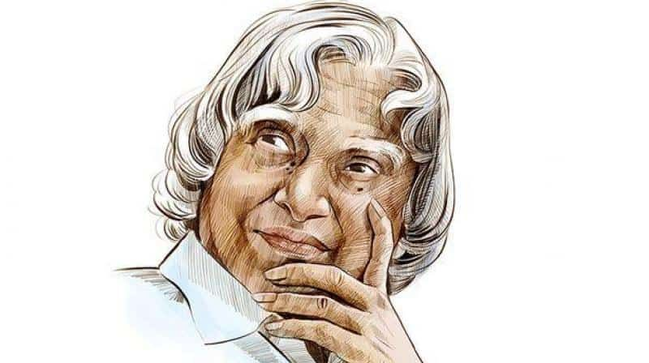

" A dream is not that which you see while sleeping, it is something
that does not let you sleep"

A . P . J ABDUL KALAM 1931 - 2015
Biography
Missile Man of India
Avul Pakir Jainulabdeen Abdul Kalam (15 October 1931 - 27 July 2015)
was an Indian aerospace scientist who served as the 11th president of
India from 2002 to 2007. He was born and raised in Rameswaram, Tamil
Nadu and studied physics and aerospace engineering. He spent the next
four decades as a scientist and science administrator, mainly at the
Defence Research and Development Organisation (DRDO) and Indian Space
Research Organisation (ISRO) and was intimately involved in India's
civilian space programme and military missile development efforts.[1]
He thus came to be known as the Missile Man of India for his work on
the development of ballistic missile and launch vehicle technology.He
also played a pivotal organisational, technical, and political role in
India's Pokhran-II nuclear tests in 1998, the first since the original
nuclear test by India in 1974.